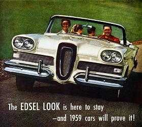
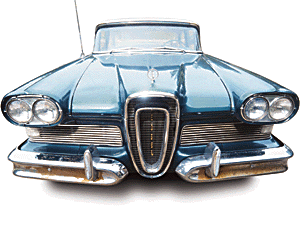
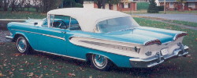

|
 |
|
Diary of a Restoration
|
 |
|
Click the Edsel logo above to hear an old radio jingle for the 1958
Edsel!
Feedback: ouija@eskimo.com
| For Edsel owners there is nothing like sharing the story or talking about
their car, personifying a piece of history that is full of exciting rumors,
facts, and sagas that are at least entertaining to the owner and hopefully to
others willing to let someone ramble on about their love.
My interest in the Edsel started when I was ten years old and way before high school with the typical cars every boy looks at; Cameros, Novas, Firebirds, Mustangs, and old Chevys. I of course being the one who always enjoyed being different, fell in love with an old green Edsel Ranger that was a mile from the house I grew up in. I tried one summer to buy the landmark from the owner but he stated matter of factly that he was going to restore her. Twenty five years later, I ended up in the same area on a fluke for a haircut. The old love was still there, patiently waiting for that rebuild that never came. I approached the same man, now much older, and asked again, and this time I was able to bring her home. With some determination I brought life back into her which brought me to the Edsel I am working on now. Understand though that my first love will always be dear to me and the one by which I will measure all other loves but as love goes, sometimes you move on and another person takes over and love changes. |
 |
|
Here we are packing her up for the long haul. |
On a trip to
garner some new fenders for my green gal, I peeked behind the older blue hulk
that was donating the much needed dentless fenders, and saw a vehicle that took
my breath and turned it upside down. It was enormous and rusty with bits
of faded turquoise and dull white showing through. The supple material that once made up her convertible top
had long since vacated in rotted strips during some trip on a flatbed to one
or another junk yard in the seventies.
She was as large as they came, a Citation, and in her day she commanded the respect of any that sat next to her, however tarnished her name was said to be. One accident decades ago sent her to a graveyard in Canada where she was scuttled and left to give her iron slowly back to the earth. Years later, a lover of cars lifted the old gal from her grave recognizing her beauty and what she must have been like on the road so long ago, and took her on a trip, away from the weeds, bees nests, and squirrels. |
|
Through coincidence, her current care taker was willing to part after a long conversation and through diligent determination and hurdling over several job changes and lay offs, the time arrived when I could finally bring her to my home and see about restoring her to a worthy condition. I truly thank the folks that made this possible, and I truly hope that I restore her to a condition that they feel proud to have let her go for. Thanks again and here is the story of her restoration, be it good or bad news, I will keep you appraised of our trip to our first Edsel event. Yes, I always name my cars, and I must admit it makes it harder to let them go because of that but it brings a vehicle closer to the family, a more personal relationship, and one that proves that love of a good car will return years of good performance. Just ask Goldie my ol' 72 Ford 3/4 ton. This is for Frosty... |
 This is what the car will look like when done...pretty car! |
Click a link below to look at the various stages of the restore process...the last link is always the latest.
Latest activity:
April 17th, Thursday 2003: Of course it was sunny and nice all day during work and lunch at the waterfront...and when I got home it rained all evening...yup figures. I was able to get the rear brake lines run...need to setup the front and connecting ones now. Getting close to mounting the engine and tranny back on the frame.
April 18th, Friday 2003: Off to Norwescon for the weekend (A Sci-Fi convention at the Sea-Tac Airport Double Tree Inn)...live long and prosper...
April 21st, Monday 2003: The motor mounts finally arrived so I will be sending those off to a company that I caught off guard with the request. They mentioned that it was not their normal thing to do but they would do this one off re-vulcanize of the motor mounts...yeah! I also mentioned the site to them and they said that if I wanted I could show their link however, I was to remind folks that they are not in the business of motor mounts however, if another citation set is requested of them, the work they do for me will set them up with the ability to do them in the future (I guess they need to make special jigs and holders to work the mount correctly, these items they'll keep around)...so if you are desperate and need a set done...well...we'll see how they turn out first. I'll let you know who they are once I get them back. Oh the suspense is killing me! uh huh...
April 22nd, Tuesday 2003: Nice day out once I got home so I was able to get the front lines run as well...an important note here, make sure you include a copper washer between the hose fitting and any brass block, the copper is soft and will seal the joint nicely and preserve the threads and fit of the hose to block. Getting ready to ship the power steering valve and the piston down to Oregon for a rebuild at ProSteering...their work is great, they did my steering box and it turned out great.
<HOME><NEXT> <Feedback: ouija@eskimo.com>